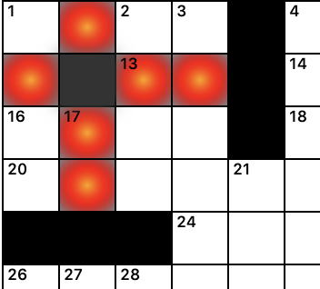

Miscellaneous Features¶
Puzzle statistics are given in the lower right hand portion of the page. It shows how many clues have been completed out of the total number (and illustrates this by way of a bar graph). It also shows the number of black squares and the proportion they comprise of the entire number of squares in the puzzle.
Note
Best practices recommend keeping the percentage of black squares to no more than 16%.
A square is said to be “blocked” if a word of at least three letters cannot be formed from it in both the horizontal and vertical directions. If you place a black square such that it blocks other squares, Phil will color these blocked squares. For instance, the black square just to the left of 13 blocks six other squares.
